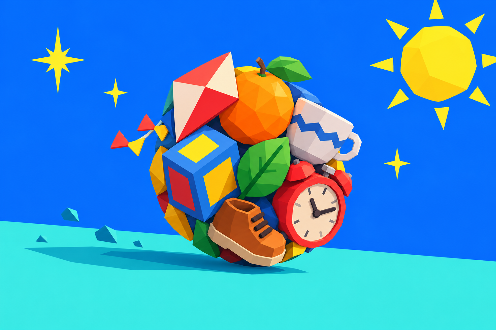

01 · collection-book
STYLE SPECIMEN · Katamari Damacy REROLL (2018)
Pocket Cosmos Catalog
Editable primitives for toybox collage and cosmic pop ui; not a finished game screen.

02 · level-select
Destination badge
Destination badge
A large objective circle paired with concise size target and route selector.
STATUS · RECORDED / FICTIONAL03 · roll-results
Cosmic result seal
Cosmic result seal
An oversized score seal plus compact new-find chips; decorative burst does not carry meaning alone.
No choice committed. Specimen state only.